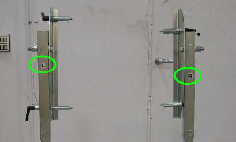

Illustration 6: Dolly Feet Configuration

Illustration 6: Dolly Feet Configuration
| NOTE: | The short part of the feet faces outwards toward the wall. The L and R stickers (If existing)(see Illustration 7) refer to the sides as you face the gantry from the front. |
Illustration 7: Direction Stickers
